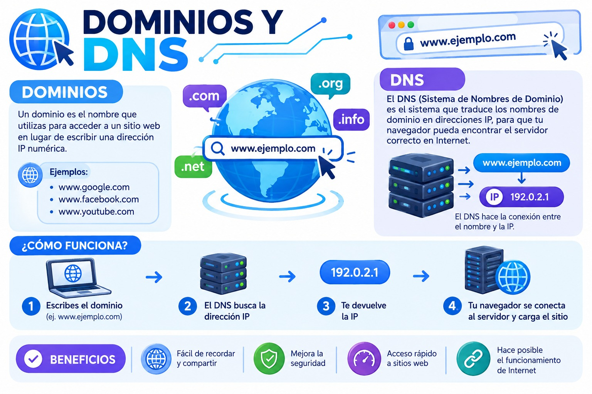

INVESTIGACIÓN
Dominios y DNS
Los elementos que ayudan a identificar y encontrar un sitio web en Internet.

¿Qué es un dominio?
Un dominio es el nombre que se utiliza para acceder fácilmente a un sitio web en Internet.

Tipos de dominios
.com
Muy utilizado por empresas y sitios comerciales.
.org
Frecuente en organizaciones.
.edu
Asociado principalmente con instituciones educativas.
.sv
Identifica dominios relacionados con El Salvador.
Subdominios
Un subdominio permite crear una sección independiente dentro de un dominio principal.
tienda.urbanstyle.com
blog.urbanstyle.com
¿Qué es DNS?
DNS significa Domain Name System. Su función principal es traducir nombres de dominio en direcciones IP para que los dispositivos puedan encontrar el servidor correspondiente.
Funcionamiento del DNS
DNS y Urban Style
Cuando Urban Style tenga un dominio propio, el sistema DNS permitirá que los usuarios encuentren el sitio utilizando ese nombre en lugar de una dirección IP.